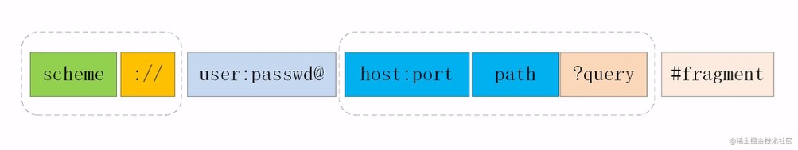

HTTP相关
报文结构
起始行 + 头部 + 空行 +实体
头部格式特点：
GET 和 POST 有什么区别？
- 缓存：
GET请求的数据会被浏览器缓存，POST不会 - 编码：
GET只能接受ASCII码，POST没有限制 - 幂等性：
GET请求是幂等的，无论多少次，结果是一样的，POST可能会随着次数的不同而不同 - 参数：
GET参数都是放在URL中的，POST是放在body中的 - TCP:
GET的话是作为一个包发出去的，POST会分成两个包，首先发head,然后发body
URI

组成格式：
协议名 + 主机信息 + 主机名:端口 + 资源路径 + 参数 + 锚点
状态码
1xx: 中间状态，还有后续操作
- HTTP升级为
webSocket，同意变更返回101
2xx: 成功状态
- 200 最常见的成功
- 204 和200一样，响应头后没有
body - 206 部分内容，断点续传，需要带上响应头字段
Content-Range
3xx: 原资源位置变动，重定向
- 301 永久重定向(例如：
HTTP变更为HTTPS) - 302 临时重定向(例如：服务器升级)
- 304 协商缓存命中
4xx: 客户端请求有误
- 400 Bad Request
- 403 Forbidden 服务端禁止
- 404 资源没找到
- 405 请求方法有误
- 413 请求体数据过大
- 414 请求行URI过大
5xx: 服务端有误
优点
- 灵活可扩展
- 请求易扩展，保证格式的情况下自定义请求头，请求实体等
- 传输多样，可以传输文本，照片，视频等等
基于
TCP可靠传输请求——应答模式
无状态，独立无关，不需要保存信息，节省网络开销
缺点
无状态，需要大量获取重复信息
明文传输，易被攻击
Accept系列字段
数据格式
发送端发送的数据类型用Content-Type
想要接收的数据类型用Accept
压缩方式
接收的压缩方式字段Accept-Encoding，值为常见的压缩方式gzip deflate br
支持语言
接收的语言类型Accept-Language
字符集
发送端表现在Content-Type, 接收端表现在Accept-Charset
定长与不定长数据
定长
Content-Length字段，只能比响应的短，不能比响应结果长(会导致传输失败)
不定长
Transfer-Encoding: chunked配合Content-Length进行分段传输，后端会将内容分段传输过来，其中Connection保持keep-alive
大文件传输
Accept-Ranges范围传输
Range 字段拆解
1 | # 单段数据 |
多段数据返回
1 | HTTP/1.1 206 Partial Content |
其中Content-Type: multipart/byteranges;boundary=00000010101表示多段数据返回，boundary表示多段数据的分割符
表单数据
主要通过Content-Type决定表单数据的格式
application/x-www-form-urlencoded
会编码成&分隔的键值对, 以URL的方式编码
multipart/form-data
请求头包含boundary，浏览器决定。每一个表单元素都是独立的资源表述
队头阻塞
概念和原因
同一个TCP长连接，队首请求阻塞导致后面的请求没有正常执行
解决方案
- 域名分片，使用多个二级域名减轻
http的压力 - 1.x版本使用并发连接，一次可以连接
6个http请求(chrome) HTTP/2使用了多路复用，采用二进制分帧，将头部信息和实体数据分别采用二进制形式传输，同一个连接的请求是有序的。Cookie
Cookie是保存会话状态的方式，服务端可用Set-Cookie来对客户端写入
生存周期
Expire: 存放过期时间
Max-Age: 单位是秒，存放可保存的时间
作用范围
Domain: 只在当前域名下生效
Path: 当前域名的指定路径下生效
安全相关
Secure: 只能通过HTTPS来传输Cookie
SameSite: Strict表示只有同源才能传输，Lax只有get请求才能传输，None没有限制
HttpOnly: 只能传输，不能通过js访问，可以预防XSS攻击
代理
正向代理
代理客户端，服务器不知道发起请求的是哪个客户端(例如：VPN)
反向代理
代理服务端，客户端不知道响应请求的是哪个服务器(例如：负载均衡)
Via字段
服务端收到的请求头上会带有
1 | via: proxy-server1 proxy-server2 |
客户端收到的响应头上会带有
1 | via: proxy-server2 proxy-server1 |
缓存
具体看浏览器八股文
强缓存
Expire字段设置请求时间并发送给服务器，服务器根据此字段给出的时间决定返回内容Cache-Control+max-age控制，private表示不允许代理服务器缓存。public表示允许代理服务器缓存，max-age表示缓存时间
协商缓存
if-modified-since和last-modified，根据文件最后修改时间判断是否是缓存中拿，缺陷就是修改文件可能前后一致，但是时间不一致，或者说本地时间和服务器时间可能有偏差，缓存都会失效，因此也有可能会采用下面2的形式。if-none-match和Etag，根据文件内容生成hash来确定，缺点就是消耗服务器资源，并且不同的服务器生成的hash也可能不一样。跨域问题
协议+主机+端口三者有一个不一致称为跨域
通常请求是由浏览器渲染进程创建的，网络进程发起的，拦截是由主进程拦截的，这里涉及到了进程的通信，利用Unix Domain Socket套接字，配合事件驱动的高性能网络并发库libevent完成进程的 IPC 过程
CORS(跨域资源共享)
服务端Access-Control-Allow-Origin确认了允许跨域的源
服务端Access-Control-Allow-Credentials确认了Cookie是否允许跨域，同时客户端withCredentials = true保证了可以跨域
非简单请求的跨域
非简单请求会发预检请求，预检请求会拿到一系列Access-Control-xxx的字段，浏览器主进程会根据这些字段进行拦截
JSONP
利用script标签没有跨域限制，缺点是只能发get请求
实现方式
1 | const jsonp = ({ url, params, callbackName }) => { |
TLS
握手流程
- 客户端生成随机数
client_random、加密方式、TLS版本传给服务端 - 服务端生成
server_random、拿到数字证书传给客户端 - 客户端验证数字证书，并用 数字证书的公钥加密会话的密钥(对称加密的密钥) 传给后端
- 后端用数字证书的私钥对
密钥进行解密，拿这个密钥进行对称加密沟通
断开重连
Session ID每个服务器针对每次会话都有一个id，但是不同服务器id可能不一样。
Session ticket服务器加密完成之后返给客户端的，发到其他服务器上的时候就可以根据这个ticket获取信息。
HTTP2
多路复用
采用二进制分帧，解决了队头阻塞的问题。
二进制分帧，将数据转换为二级制，保存在头部和实体中，通过流ID来保证请求的一致性，并且可以是双向的
头部压缩
头部压缩，减少网络传输数据量